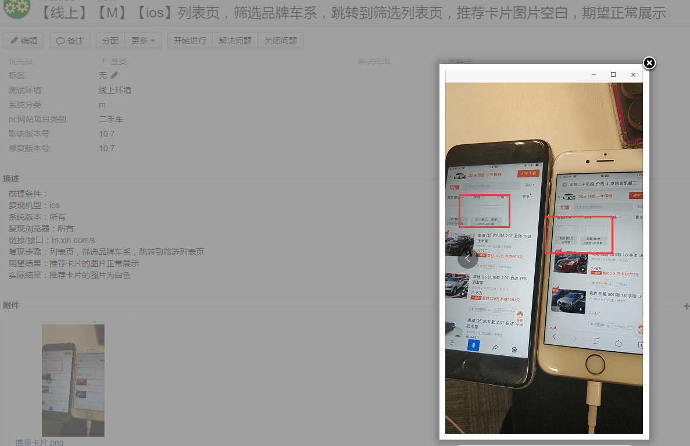

今天解决一个线上bug的时候发现的问题，如下图：

从表象来看，同样的图片，安卓手机上可以正常展示，但是到ios手机上首次进入页面就不能正常显示图片，必须手动刷新一次页面才能正常加载。
这时候，我们首先会考虑是不是ios设备的兼容问题？
于是乎，第一想到的就是问度娘，ios手机浏览器不能正常展示图片是什么原因？这么泛泛的问题，想找到你的答案如同大海捞针。
其次想到的就是在本地环境调试一下，结果测试机在本地环境看是正常的，线上环境看问题复现率100%。这时就想着看看图片资源路径有什么差异，为什么上面的图片不展示，下面的都正常展示了？
答案是：我们网站访问强制切换https安全协议，而接口提供的图片资源时http协议的。于是就引发了上面的问题，因为https地址中，如果加载了http资源，浏览器将认为这是不安全的资源，将会默认阻止，这就会给你带来资源不全的问题了，比如：图片显示不了，样式加载不了，JS加载不了。
参考文章：
https://www.cnblogs.com/yougewe/p/7440008.html